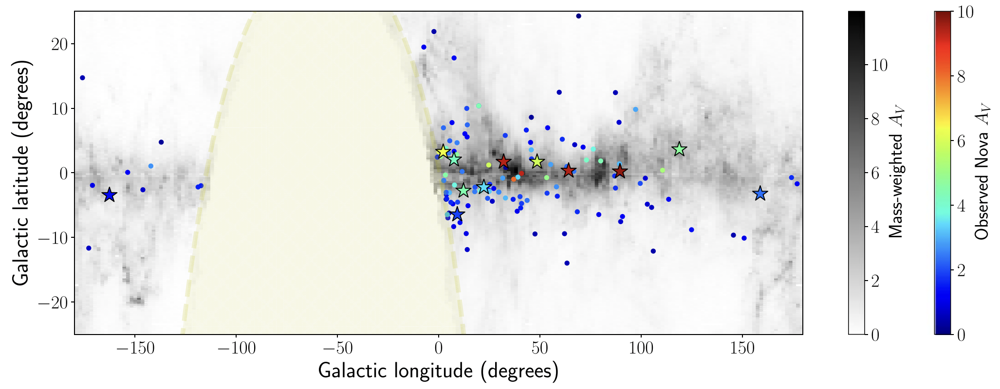
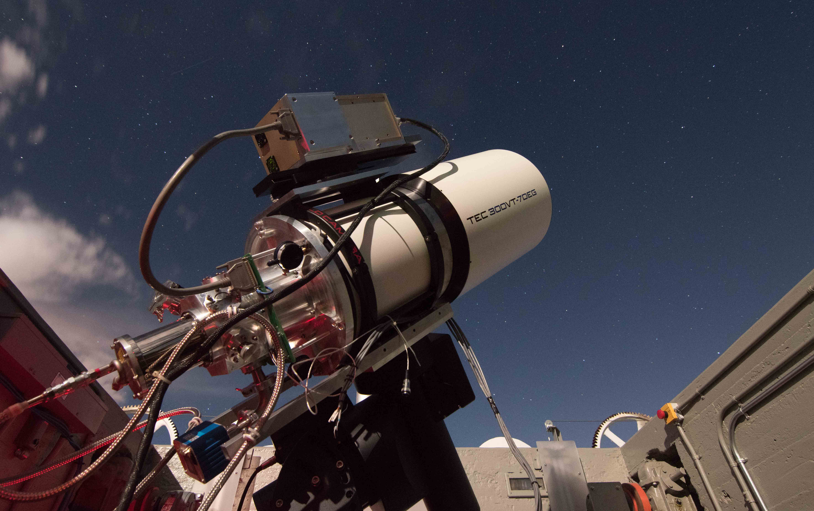

I am an Assistant Professor in the Department of Astronomy at Columbia University and an Associate Research Scientist at the Center
for Computational Astrophysics, Flatiron Institute in New York City. I work with wide-field imaging surveys on the ground and in space to discover
cosmic fireworks from stellar binaries in our Galaxy and in the distant Universe. Using panchromatic follow-up facilities, I study the role of
stellar cataclysms in shaping the universe as we "see" it in light and "hear" it in gravitational waves. You can find more
details of my recent work here.
Between 2021–2024, I was a NASA Einstein Fellow and Kavli Institute Fellow at the Massachusetts Institute of Technology, and a postdoctoral affiliate
at the Institute for Theory and Computation at Harvard University. I obtained my PhD in Astrophysics from the California Institute of Technology in 2021 under the supervision of
Mansi Kasliwal.
As part of my thesis, I served as the data pipeline lead and helped commission
Palomar Gattini-IR,
the first wide-field infrared time-domain survey to study dust-obscured eruptions in the Milky Way. Using the
Zwicky Transient Facility, I helped construct the largest volume-limited sample of nearby supernovae to study faint and
fleeting explosions from the eruptions of helium shells on white dwarfs and births of neutron stars in compact binary systems.
Previously, I obtained my undergraduate degree in Physics from the
Indian Institute of Science in 2016, working with
Yashwant Gupta and
Prateek Sharma on high time-resolution studies of radio pulsars. You can find a copy of my CV
here.

PGIR novae locations versus optical samples; extinction shown in grayscale.
The Galactic locations of PGIR-discovered novae (colored stars) compared to previous optical samples (colored circles). The grayscale map shows typical dust extinction; symbol colors show estimated extinction toward the novae. The PGIR sample unveils heavily obscured outbursts near the central plane missed in optical bands.
Ongoing work
I currently work with data from several time-domain surveys to discover transient phenomena from compact stellar binaries in the Galactic plane. I lead a large, funded project
to characterize the transient mid-infrared sky using nearly 15 years of archival data from NASA's WISE space telescope. As part of a team of more than a dozen researchers, we are
discovering infrared outbursts associated with stellar mergers and planetary engulfment events in the nearby universe, novae and X-ray binaries in the dusty Galactic plane, and
enshrouded accretion flares from supermassive black holes across the universe (see WISE publication
library).
Using the Palomar Gattini-IR survey, I systematically search for large-amplitude transients in the Milky Way, revealing a population of heavily obscured
novae that are missed in the optical bands, dust-enshrouded young stars in outburst, and reddened microlensing events. The infrared sensitivity of PGIR also makes it
ideally suited to study counterparts of dust-obscured Galactic X-ray sources to enable systematic characterization of the donors and evolutionary states of X-ray binaries.
With the Wide-Field Infrared Transient Explorer (
WINTER) coming online, we are carrying out unprecedented characterization of infrared variability in Galactic accreting sources. As part of my research, I also develop pipelines for processing large
imaging datasets from public time-domain surveys to develop a panchromatic view of the transient sky.
Discovery Engines
Ongoing and past projects with wide-area imaging time-domain surveys

Palomar Gattini-IR (PGIR)
The dynamic infrared universe unveiled with the widest field-of-view infrared camera. I use PGIR to study the dust-obscured Galactic plane in search of eruptions on white dwarfs, fast flares from Galactic compact objects, and accreting neutron stars and black holes enshrouded in dust.
An unbiased view of the optical time-domain sky. Using ZTF, I study faint and fleeting explosions in nearby galaxies to understand the fates of the most compact white dwarf binaries and the progenitors of compact neutron star binaries that we detect in gravitational waves.